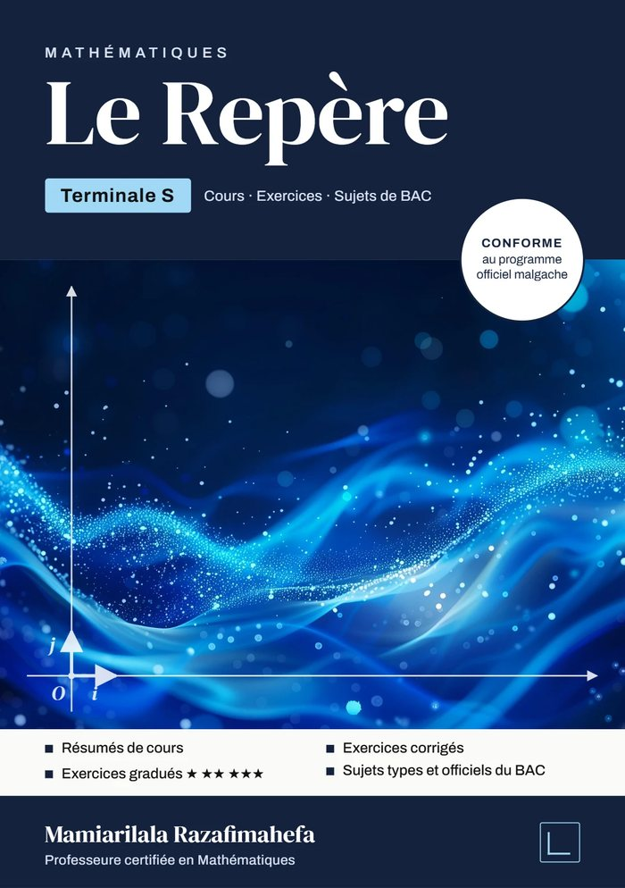

MATHÉMATIQUES
Un manuel complet pour préparer le Baccalauréat Série S à Madagascar : le cours illustré, les méthodes pas à pas, des exercices gradués du plus accessible au plus exigeant, et les sujets officiels de 2021 à 2026, tous corrigés en détail.
Livraison gratuite à Antananarivo

Échauffement · Lire une figure
Chaque chapitre commence ses exercices par la lecture d'une figure. Voici celle de la couverture : déplacez M, lisez f(a) et la pente de la tangente, puis répondez au Vrai/Faux.
1. f est croissante sur [−1 ; 1].
Faux. Placez a entre −1 et 1 : le nombre dérivé reste négatif, donc f y est décroissante.
2. L'équation f(x) = 0 a exactement trois solutions sur l'intervalle représenté.
Vrai. La courbe coupe l'axe des abscisses trois fois : elle monte au-dessus, redescend juste sous l'axe, puis remonte.
3. La tangente au point d'abscisse 0 a pour coefficient directeur −1,5.
Vrai. Avec a = 0, on lit f′(0) = −1,50 : c'est la pente de T.
Sommaire
Algèbre, Analyse, Géométrie et Probabilités, conformément au programme de Terminale S du MESUPRES. Ouvrez un chapitre pour lire sa citation et ses objectifs.
« Dieu a créé les nombres entiers ; tout le reste est l'œuvre de l'homme. »Leopold Kronecker
Objectifs du chapitre
« Une matrice, c'est une machine à transformer des vecteurs, et une table de nombres qu'on apprend à faire parler. »
Objectifs du chapitre
« L'imaginaire est un beau et merveilleux refuge de l'esprit divin, presque un amphibie entre l'être et le non-être. »Gottfried Wilhelm Leibniz
Objectifs du chapitre
« Approchez, et la foi vous viendra. »d'après Jean le Rond d'Alembert
Objectifs du chapitre
« Pour connaître une courbe, il suffit d'en connaître les tangentes. »d'après Gottfried Wilhelm Leibniz
Objectifs du chapitre
« Toute la connaissance d'une courbe tient dans ses pentes et sa courbure. »d'après Christiaan Huygens
Objectifs du chapitre
« Le signe ∫ n'est autre qu'un S allongé : il représente une somme. »d'après Gottfried Wilhelm Leibniz
Objectifs du chapitre
« Les logarithmes, en abrégeant les calculs, ont pour ainsi dire doublé la vie des astronomes. »Pierre-Simon de Laplace
Objectifs du chapitre
« La fonction exponentielle est la seule, à un coefficient près, qui soit égale à sa propre dérivée : elle se reproduit elle-même. »adage d'analyse
Objectifs du chapitre
« Le raisonnement par récurrence est l'instrument qui permet de passer du fini à l'infini. »d'après Henri Poincaré
Objectifs du chapitre
« Les lois de la nature ne sont rien d'autre que des relations entre une grandeur et ses variations. »adage de physique mathématique
Objectifs du chapitre
« Donnez-moi un point d'appui et un levier, et je soulèverai le monde. »d'après Archimède
Objectifs du chapitre
« La symétrie est l'idée par laquelle l'homme, à travers les âges, a tenté de comprendre et de créer l'ordre, la beauté et la perfection. »Hermann Weyl, Symmetry
Objectifs du chapitre
« La géométrie n'est pas vraie, elle est avantageuse. »d'après Henri Poincaré
Objectifs du chapitre
« La théorie des probabilités n'est au fond que le bon sens réduit au calcul. »Pierre-Simon de Laplace
Objectifs du chapitre
« Lorsqu'une information nouvelle nous parvient, la probabilité que nous accordons à un événement doit être révisée. »d'après Thomas Bayes
Objectifs du chapitre
« L'espérance mathématique est la somme de chaque gain multiplié par la probabilité de l'obtenir. »d'après Christiaan Huygens, De ratiociniis in ludo aleae
Objectifs du chapitre
« L'art de conjecturer consiste à mesurer aussi exactement que possible les probabilités des choses. »Jacques Bernoulli, Ars Conjectandi
Objectifs du chapitre
Méthode
Les dix-neuf chapitres suivent le même plan. L'élève sait toujours où il en est : comprendre, voir faire, s'échauffer, s'entraîner, puis passer l'épreuve.
Définitions, propriétés et théorèmes, avec schémas et exemples.
Les démarches attendues au Bac, étape par étape, puis appliquées.
Lire une figure, puis une série de Vrai/Faux pour vérifier les réflexes.
★☆☆ facile, ★★☆ moyen, ★★★ difficile.
Au moins cinq sujets au format officiel, avec le barème.
La démarche à suivre, numérotée, pour un type de question fréquent à l'examen.
Ce que le correcteur attend, et la façon de rédiger pour gagner les points.
Les erreurs classiques repérées dans les copies, et comment les éviter.
La notion appliquée à une situation concrète : un test de dépistage, un emprunt, une population.
Les mathématiciens derrière les théorèmes, en quelques lignes.
L'essentiel d'une section rassemblé dans un tableau à relire la veille de l'épreuve.
Feuilleter
La couverture et seize pages de l'édition actuelle, de l'algèbre aux sujets du Bac et à leurs corrigés. Touchez une page pour l'agrandir, puis tournez les pages avec les flèches.
Baccalauréat Série S
Les sujets officiels ont tous la même architecture depuis 2021. Le livre les transcrit intégralement, les corrige question par question et entraîne sur chacun des quatre blocs. Téléchargez les énoncés ci-dessous.
Répartition des 20 points
Sujets officiels à télécharger
Énoncés officiels transcrits, au format du livre (A5). Le corrigé de la session 2026 est offert ; ceux de 2021 à 2025 sont dans le livre.
sujets types complets dans le chapitre Entraînement, au format et au niveau de l'épreuve.
sujets types par chapitre, pour s'exercer dès qu'une notion est vue en classe.
sujets du bac étranger pour varier les énoncés et sortir des automatismes.
Commander
Commandez par WhatsApp ou par téléphone. La livraison est gratuite à Antananarivo.
Le Repère · Mathématiques Terminale S
105 000Ar
420 pages : cours, exercices corrigés et sujets de BAC.
WhatsApp ou appel
034 86 068 86
Précisez votre nom, le nombre d'exemplaires et votre quartier de livraison.
La collection Le Repère